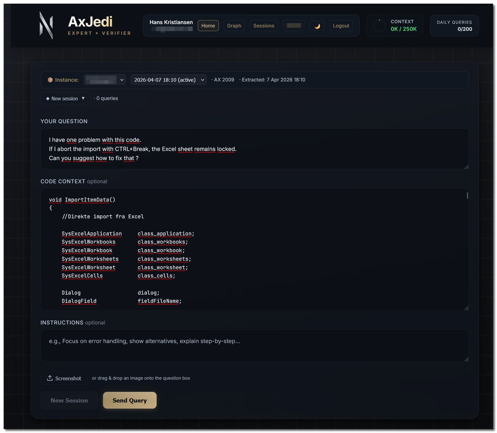
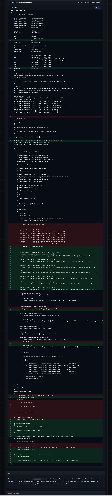

Approach
AxJedi explains its strategy before writing code. What pattern it will use, why, and what alternatives it considered. You understand the "why" before seeing the "what."
Feature Deep Dive
Five expert sections, fully verified code, and one-click deployment — every single time.

The AxJedi query interface — paste your code, ask your question
Section 1
Each answer follows the same structure so developers can review strategy, implementation, system impact, and rationale without context switching.
AxJedi explains its strategy before writing code. What pattern it will use, why, and what alternatives it considered. You understand the "why" before seeing the "what."
Verified X++ code with syntax-highlighting style. Every identifier is checked against your codebase database. Verification badges show pass/fail status, and bounce count shows AI self-correction before delivery.
public static void createPurchOrder()
{
PurchTable purchTable;
// Verified against your model store metadata
ttsBegin;
purchTable.initValue();
purchTable.PurchId = NumberSeq::newGetNum(PurchParameters::numRefPurchId()).num();
purchTable.insert();
ttsCommit;
}How the suggested code fits into your existing system. References your actual classes, tables, and inheritance hierarchies. Shows exactly where this code belongs in your codebase.
Method-by-method breakdown in table format describing behavior, key logic, and necessity. Developer-ready documentation ships alongside the code.
Design patterns and best practices extracted from the specific scenario. Helps junior developers ramp faster and helps senior developers validate architectural instincts.
Section 2
Beyond answer structure, AxJedi includes deployment tooling, verification depth, visualization, and enterprise controls built for production AX workflows.
One-click export to properly formatted XPO. Auto-detection of target class/form. Diff view showing exactly what changed. Version history for all exports. Import instructions included.

Code changes highlighted: green for additions, red for removals
Real-time verification against 500,000+ identifiers. Index hints checked against actual table indexes. Method signatures validated. Hallucination detection with fuzzy matching suggestions.
Interactive graph of your entire codebase. Search any entity and explore 1-3 hops of relationships. Color-coded connectors distinguish incoming vs outgoing dependencies for fast architecture understanding.
See exactly how much of the context window is used with a color-coded meter. Know how much capacity remains before asking a more complex, multi-part question.
Multiple named sessions, pinned high-value conversations, and full query history with preserved context. Session restore lets you resume exactly where you left off.
TLS 1.3 encryption, IP allowlisting, per-user authentication (bcrypt), CSRF protection, audit logging, and daily query limits keep codebase data secure in every environment.
Section 3
AxJedi routes every query through verification-first orchestration and automatically escalates when needed.
Most queries resolve in seconds. Complex ones automatically escalate to our most powerful model. You never have to choose — the system decides for you.
Get Access
Apply now to test AxJedi on your AX 2009 or AX 2012 codebase and evaluate verified X++ generation in your own environment.